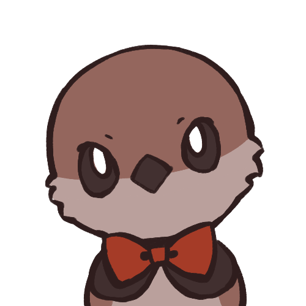

Nightingale Chess
Encore の合言葉

ナイチンゲールサヨナキドリ・店の看板
いらっしゃい！ ひとつ聞いてもいいかな。
After Hours で、待ったも相談も使わずに、アルタイルに勝った？
ほんとに!? すごい……あのアルタイルに勝ったんだね。ぼくはまだ一度も勝てたことがないんだ。
それなら、今度はアルタイルが本気で白を持って待ってるよ。店に入る合言葉を教えるね。
合言葉
CHECKMATE
ゲームのメニューの「ロード」を開いて、合言葉を入れて「読み込む」を押すと、タイトルに「Encore（本気の再戦）」が加わります。
そっか。アルタイルはほんとうに強いから、ぼくもいつも負けてるんだ。
でもね、勝てない相手じゃないよ。ぼくがアルタイルと指して気付いたことを教えるね。
- 指す前に、自分の駒で取られそうなものがないか数えてみて。アルタイルは、浮いた駒を絶対に見逃さないから。
- 駒を取る前に、取ったあと何を取り返されるかも見てね。わざと取らせる罠があるよ。
- アルタイルが今動かした駒が、何に当たっているかを毎回確かめて。
- 勝ったら、またここに来てね。待ってるよ！
© 2026 丘芽美湖 (Miko Okame)